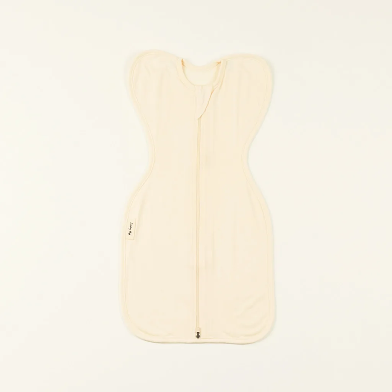
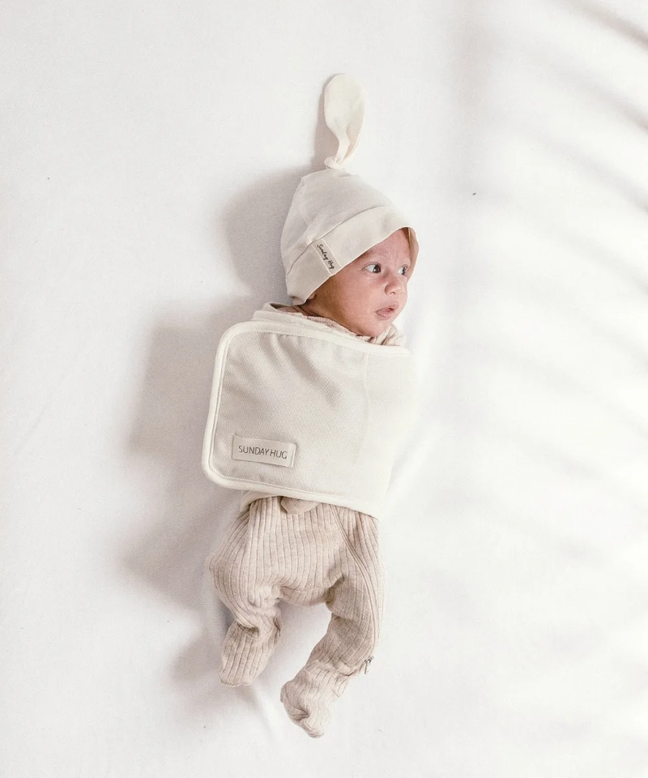
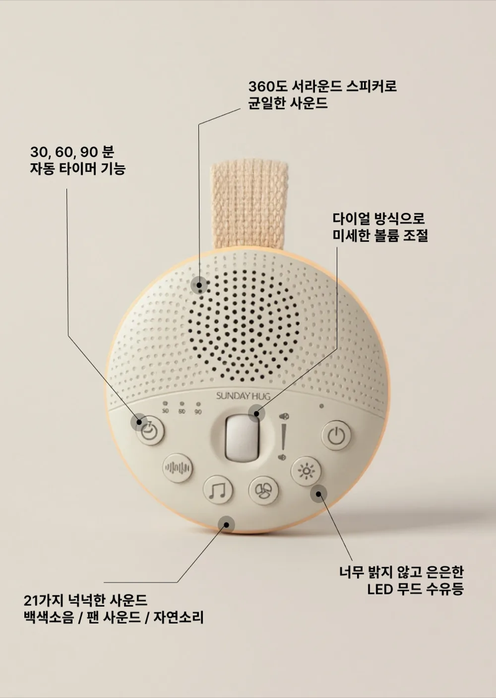
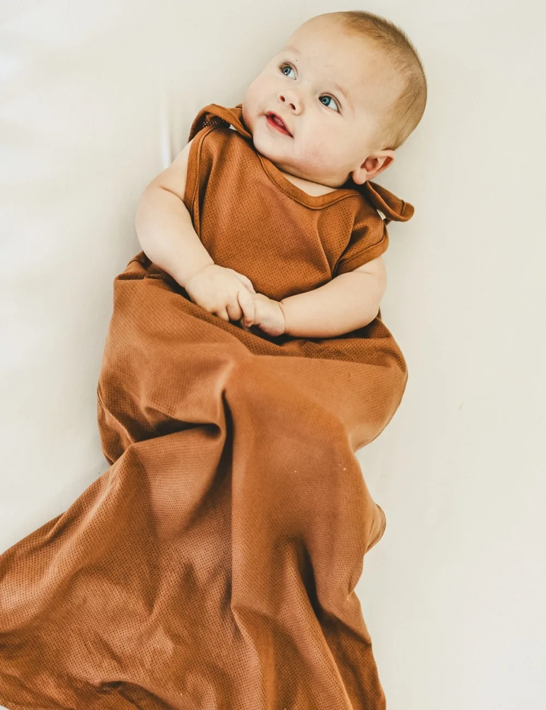
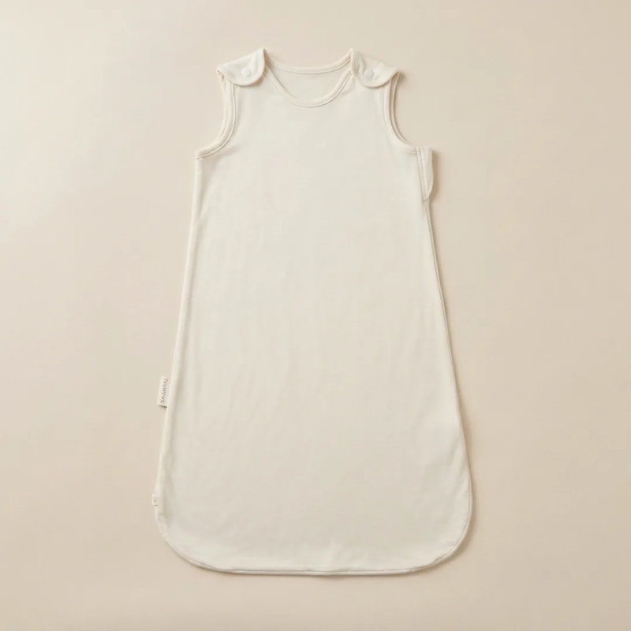
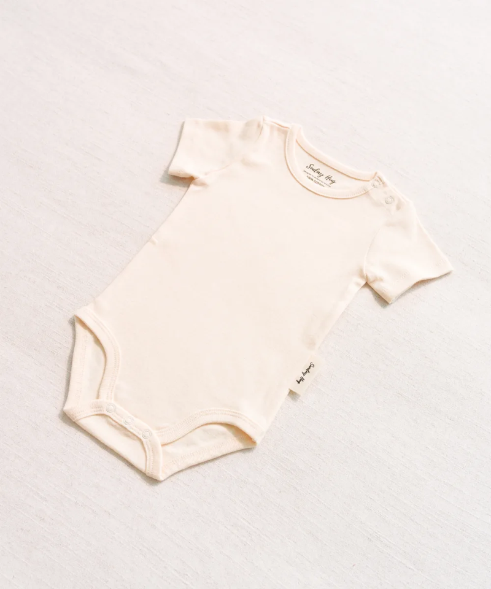
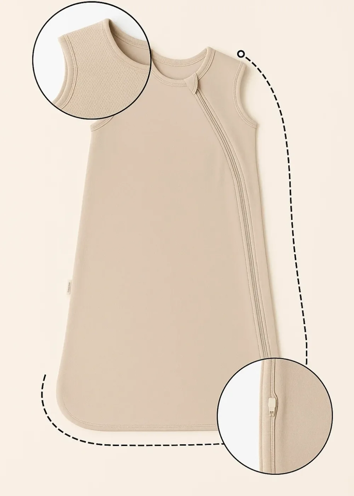
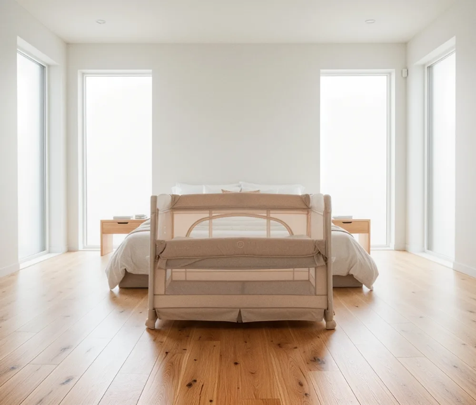

수면 솔루션
가이드
아기가 잠을 못 자는 이유, 함께 찾아볼게요. 원인을 알면 해결이 훨씬 쉬워져요.
아기가 잠을 못 자는 데는 반드시 이유가 있어요. 아래에서 우리 아이에게 해당하는 고민을 찾아보세요. 원인을 정확히 알면, 해결 방법도 분명해져요.
아기가 잠들었다 싶으면 갑자기 팔을 쫙 벌리며 깜짝 놀라서 깨는 모습, 많이 보셨을 거예요. 이게 바로 모로반사예요. 모로반사는 신생아에게 나타나는 아주 정상적인 원시 반사로, 큰 소리, 갑작스러운 자세 변화, 심지어 아기 자신의 움직임에도 반응해서 나타나요. 뇌가 아직 미성숙해서 이 반사를 스스로 통제할 수 없기 때문에, 자다가 깨는 일이 반복되는 거예요.
모로반사는 보통 생후 3~4개월이 되면 자연스럽게 사라져요. 하지만 그 전까지는 아기와 부모 모두에게 정말 힘든 시간이 될 수 있어요. 특히 밤에 겨우 재워놓으면 10분도 안 돼서 놀라서 깨버리는 패턴이 반복되면, 부모의 수면 부채가 급격히 쌓이게 돼요. 이 시기를 잘 넘기려면 아기의 반사를 부드럽게 잡아줄 수 있는 도구가 필요해요.
가장 효과적인 방법은 속싸개로 아기를 감싸주는 거예요. 팔을 적당히 감싸서 갑작스러운 움직임을 줄여주면, 아기가 놀라서 깨는 횟수가 눈에 띄게 줄어들어요. 중요한 건 너무 꽉 조이지 않으면서도 적절한 압박감을 주는 거예요. 엉덩이와 다리는 자유롭게 움직일 수 있도록 해주는 게 고관절 발달에도 좋아요.
속싸개를 처음 사용할 때는 아기가 깨어 있는 상태에서 먼저 익숙해지게 해주세요. 포근한 감싸기에 적응된 후 잠자리에 사용하면 거부감이 훨씬 줄어들어요.


밤에는 눈이 말똥말똥, 낮에는 꿀잠. 온 가족이 아기의 리듬에 맞춰 뒤집어진 생활을 하고 계신 건 아닌가요? 신생아의 밤낮 바뀜은 아주 흔한 현상이에요. 엄마 뱃속에서는 밤낮의 구분 없이 지냈기 때문에, 세상에 나온 아기는 아직 24시간 주기 리듬(서캐디언 리듬)이 완성되지 않은 상태예요. 이 리듬은 보통 생후 6~8주가 되어야 자리 잡기 시작해요.
밤낮을 교정하려면 빛의 노출을 조절하는 것이 가장 중요해요. 낮에는 자연광을 충분히 받게 하고, 수유 시에도 밝은 환경에서 해주세요. 아기가 낮잠을 너무 오래 자면 살짝 깨워주는 것도 괜찮아요. 반대로 밤에는 수유 후에도 조명을 최대한 어둡게 유지하고, 놀아주거나 말을 많이 걸지 않는 것이 좋아요. "밤은 조용하고 어두운 시간"이라는 신호를 일관되게 보내주는 거예요.
수면 환경도 큰 역할을 해요. 밤 수면 시에는 암막 커튼으로 빛을 완전히 차단하고, 백색소음을 은은하게 틀어주면 아기가 밤이라는 것을 더 빨리 인식하게 돼요. 백색소음은 엄마 뱃속에서 듣던 혈류 소리와 비슷해서 아기에게 큰 안정감을 줘요. 보통 2~3주 정도 꾸준히 환경을 세팅하면 밤낮 리듬이 자연스럽게 교정돼요.
아침에 아기를 깨울 때 커튼을 활짝 열어 자연광을 들이세요. 빛은 아기의 체내시계를 맞추는 가장 강력한 신호예요. 낮 수유 시에도 밝은 환경을 유지하면 교정이 더 빨라져요.


겨우 재웠는데 한두 시간 만에 또 깨서 울어요. 밤새 이게 반복되면 정말 지치시죠. 3~8개월 아기가 자주 깨는 데는 여러 가지 이유가 있어요. 가장 흔한 원인은 온도 변화, 이불을 차서 추워진 것, 그리고 배고픔이에요. 원인을 하나씩 짚어보면 의외로 간단한 해결책을 찾을 수 있어요.
이 시기의 아기는 활동량이 부쩍 늘면서 잠자리에서도 많이 움직여요. 이불을 차내는 것은 거의 모든 아기에게 나타나는 현상인데, 이불이 벗겨지면 체온이 떨어지면서 잠에서 깨게 돼요. 슬리핑백은 이 문제를 근본적으로 해결해줘요. 입는 이불이기 때문에 아무리 뒤척여도 벗겨질 일이 없고, 아기의 체온을 일정하게 유지해줘요.
실내 온도도 중요한 요소예요. 20~22도가 이상적이고, 이 범위를 벗어나면 아기가 불편해서 깨는 경우가 많아요. 온도계를 침대 근처에 두고 자주 확인하는 습관을 들이면 좋아요. 또한 잠들기 전 마지막 수유(꿈 수유)를 충분히 해주면 배고파서 깨는 횟수를 줄일 수 있어요. 소재별로 다른 TOG의 슬리핑백을 계절에 맞게 사용하면 온도 조절이 훨씬 수월해져요.
아기 뒷목이나 가슴 부위를 손으로 만져보세요. 땀이 나면 더운 거고, 차가우면 추운 거예요. 손발이 차가운 건 정상이니 손발로 체온을 판단하지 마세요.



잘 자던 아기가 어느 날 갑자기 못 자기 시작하면 정말 당황스러우시죠. "내가 뭘 잘못한 걸까?" 자책하시는 분들도 많아요. 하지만 수면 퇴행은 아기의 뇌와 몸이 크게 성장하고 있다는 신호예요. 발달 과정에서 자연스럽게 나타나는 현상이고, 대부분 2~4주 안에 지나가요. 부모가 당황하지 않는 것이 가장 중요해요.
수면 퇴행은 크게 4개월, 8개월, 12개월에 나타나요. 각 시기마다 원인이 조금씩 달라요. 4개월 퇴행은 수면 구조 자체가 변하면서 생기고, 8개월 퇴행은 분리불안과 대근육 발달이 원인이에요. 12개월 퇴행은 걷기 시작하면서 나타나는 경우가 많아요. 시기별 특성을 이해하면 더 차분하게 대응할 수 있어요.
수면 주기가 어른처럼 재편되는 시기. 렘수면과 비렘수면 사이 전환에 아기가 적응하지 못해 자주 깨요.
분리불안이 시작돼요. 부모가 보이지 않으면 불안해하고, 기어다니느라 뇌가 흥분 상태를 유지해요.
걷기 시작하면서 낮잠 패턴이 바뀌어요. 에너지 소모가 커지면서 오히려 잠들기 어려워하기도 해요.
시기별 대처법
4개월 퇴행에는 기존 수면 루틴을 최대한 유지하는 것이 핵심이에요. 새로운 수면 구조에 적응하는 중이기 때문에, 이 시기에 수면 습관을 급격히 바꾸면 오히려 혼란이 길어질 수 있어요. 속싸개에서 슬리핑백으로의 전환이 필요한 시기이기도 하니, 아기의 뒤집기 여부를 잘 관찰해주세요.
8개월 퇴행에는 분리불안을 다루는 것이 중요해요. 잠자리에 아기를 눕힌 후 바로 떠나지 말고, 잠시 곁에 있다가 조용히 나가는 방식으로 서서히 적응시켜 주세요. 이 시기의 아기는 자신만의 안전한 수면 공간이 있으면 더 빨리 안정감을 찾아요. ABC 접이식 침대 같은 전용 침대가 도움이 될 수 있어요.
12개월 퇴행에는 낮잠 스케줄을 재조정해주세요. 이 시기에는 낮잠이 2회에서 1회로 줄어드는 전환이 일어나요. 무리하게 낮잠을 줄이기보다는 아기의 피곤 신호(눈 비비기, 하품)를 보고 유연하게 대응하는 것이 좋아요. 밤잠 전 루틴을 더 길고 차분하게 가져가면 도움이 돼요.

아기가 잘 자려면 몸에 맞는 제품도 중요하지만, 수면 환경을 제대로 세팅하는 것이 기본이에요. 다섯 가지를 점검해보세요.
실내 온도 20~22°C
아기에게 가장 쾌적한 수면 온도예요. 너무 덥거나 추우면 자다 깨는 원인이 돼요. 온도계를 침대 근처에 두세요.
습도 50~60%
건조한 환경은 아기 코막힘과 피부 건조를 유발해요. 가습기를 사용하되, 과습도 주의하세요.
백색소음 활용
50dB 이하의 은은한 백색소음은 외부 소음을 차단하고 아기에게 안정감을 줘요. 아기에게서 1m 이상 떨어뜨려 놓으세요.
빛 차단 (암막)
빛은 멜라토닌 분비를 억제해요. 밤잠과 낮잠 모두 최대한 어두운 환경을 만들어주세요.
적정 TOG 선택
실내 온도에 맞는 TOG의 슬리핑백을 선택하세요. 24°C 이상은 0.3, 20~24°C는 1.0, 16~20°C는 2.5 TOG가 적합해요.